Next: Set Theoretic Notation
Up: Erosion, Dilation and Skeletonization
Previous: Erosion, Dilation and Skeletonization
Contents
Erosion shrinks the boundary of a binary image to be smaller,
while dilation expands the boundary to be larger.
Usually the shrinkage or growth is by one pixel, but
greater changes are possible with the recipe provided
by the
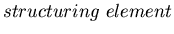.
The structuring element 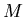 is a square matrix
of binary values that is applied to the image 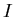 with the
following rule for the eroded output.
- Erosion rule: replace the central point of the mask with the 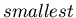 value
of covered by the mask. Assuming is a binary
image, then the mask centered at the boundary of
will output zero because the mask
overlaps both 0s (outside boundary) and 1s (inside boundary).
Examples of eroded objects are given
in Figure 11.2 for different structuring elements.
Figure 11.2:
(Left) Structuring element, (middle) object,
and (right) eroded object.
In this example, a filled (open) circle
corresponds to
an intensity value of 1 (0)
| 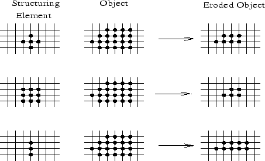 |
Large structuring
elements tend to smooth boundary features, small ones tend to preserve
boundary shape, and shaped
structuring elements preserve similar appearing features in the boundary.
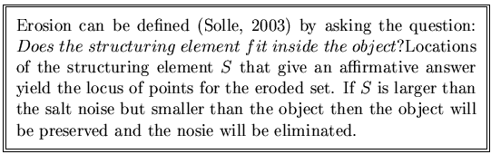
In a similar fashion, the rule for dilation is
- Dilation rule: replace the central point of the mask with the 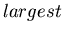
value of covered by the mask. If is a binary
image then this value just outside the boundary will be one because the mask
centered one pixel outside the boundary
overlaps both 0s (outside boundary) and 1s (inside boundary).
Dilation examples are given
in Figure 11.3 for different structuring elements.
Figure 11.3:
(Left) Structuring element, (middle) object,
and (right) dilated object.
In this example, a filled (open) circle
corresponds to
an intensity value of 1 (0)
| 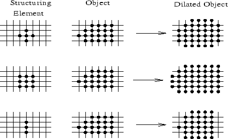 |
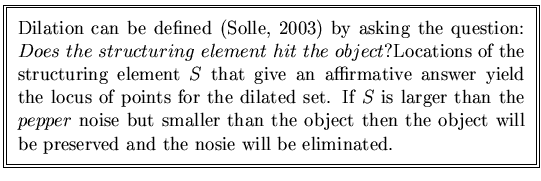
The MATLAB commands for a simple binary erosion code is
below.
function [ie]=jmerode(I,M)
% Erode binary image I with a 3x3 structure mask M
sum1=sum(M(:));M=M/sum1;
ie=conv2(I,M,'same');
ie=fix(ie+.001)==1;
This is a crude version of the more sophisticated MATLAB code
given by
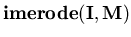,
but nevertheless
the crude code gives the eroded
rectangles seen in Figure 11.4
for the structuring mask
Figure 11.4:
(left) Rectangular object eroded (middle)
once and (right) twice.
| 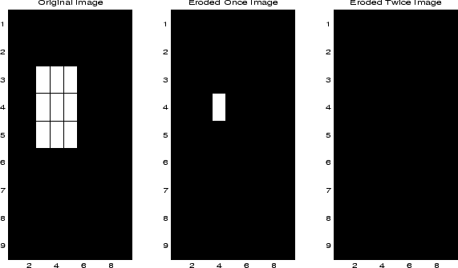 |
The MATLAB commands for a simple binary dilation code is
below.
function [ie]=jmdilate(I,f)
% Dilate boundary of binary image I by using 3x3
% structure mask f
ie=conv2(I,f,'same');
ie=ie+.001>=1;
This is a crude version of the more sophisticated MATLAB code
given by
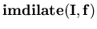,
but the crude code still is effective as seen
by the dilated rectangles seen in Figure 11.5.
Again, the structure matrix is that in equation 11.4.
Figure 11.5:
(left) Rectangular object dilated (middle)
once and (right) twice.
| 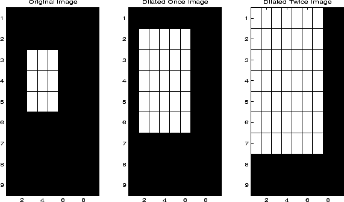 |
Next: Set Theoretic Notation
Up: Erosion, Dilation and Skeletonization
Previous: Erosion, Dilation and Skeletonization
Contents
Sheng Jian Ming
2003-10-21